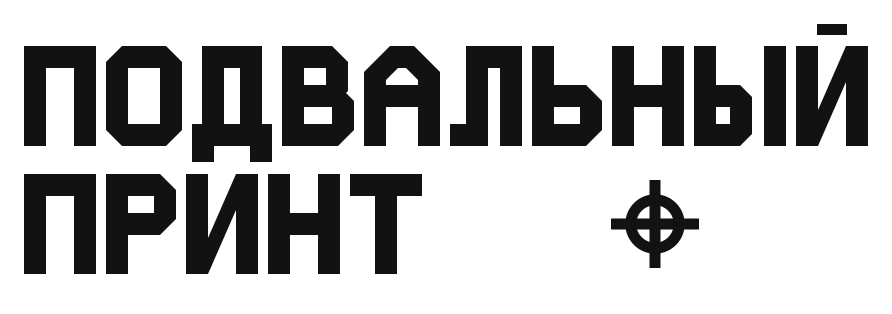
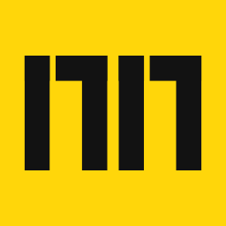

Буквы нарисованы с нуля на квадратной сетке — знак не зависит от загрузки шрифтов. Цвет — только ink или белый. Жёлтая плитка — только иконка приложения и аватары.




Высота буквы «П» с каждой стороны. Минимум: словесный знак 24 px, «ПП» 16 px.
Inline SVG с fill: currentColor — знак сам берёт ink темы, в Deadlock становится кремовым.
Красить терракотой или цианом, растягивать, обводить, добавлять тень и свечение.